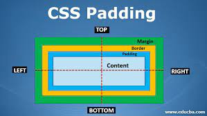
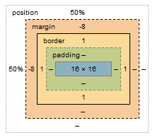

CSS has properties for specifying the padding for each side of an element: 1. padding-top, 2. padding-right, 3. padding-bottom, 4. padding-left
The CSS margin properties are used to create space around elements, outside of any defined borders. With CSS, you have full control over the margins. There are properties for setting the margin for each side of an element (top, right, bottom, and left).
CSS has properties for specifying the margin for each side of an element: 1. margin-top, 2. margin-right, 3. margin-bottom, 4. margin-left
